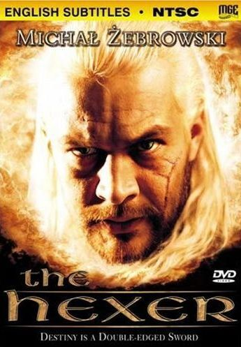

Conheça as adaptações baseadas nos livros:

Wiedźmin (lançado mundialmente como The Hexer) é um filme polonês de 2001 dirigido por Marek Brodzki, roteirizado por Michał Szczerbic e estrelado por Michał Żebrowski. Seu enredo é baseado na série de livros homônima escrita por Andrzej Sapkowski.
O filme é, basicamente, a série de televisão de mesmo nome (até então não lançada) condensada em um corte de cerca de 2 horas de duração, recebendo diversas avaliações negativas tanto dos fãs quanto dos críticos especializados, com o próprio Andrzej Sapkowski, em uma entrevista, manifestando negativamente sua opinião sobre o filme: "Eu só posso responder com uma única palavra, e ela é bastante obscena, embora curta. Como sou um polonês católico e estamos quase na páscoa, não posso proferir palavrões", completou.
Já a série homônima, foi idealizada por Michał Szczerbic e produzida pela Heritage Films. O seriado foi transmitido pela emissora polonesa TVP2 com teve 13 episódios no total, e estreou no ano seguinte, conseguindo mostrar-se muito mais coerente com os livros do que o filme, embora ainda considerada um fracasso, principalmente pela má reputação do longa. No entanto, os críticos elogiaram a trilha sonora de ambas as obras, realizada por Grzegorz Ciechowski.
The Witcher é uma série de televisão de drama fantasia criada por Lauren Schmidt Hissrich para a Netflix, baseada na série de livros de mesmo nome de Andrzej Sapkowski.
Geralt de Rivia é um bruxo, um mutante com poderes especiais que mata monstros por dinheiro. A Terra está num estado de caos enquanto o império de Nilfgaard procura expandir o seu território. Entre os refugiados desta luta está Cirilla, também chamada Ciri, a Princesa de Cintra, que está sendo perseguida por Nilfgaard. Ela e Geralt estão destinados um ao outro. Em suas aventuras, Geralt também conhece Yennefer de Vengerberg, uma feiticeira.
Veja algumas fotos
.png)
Henry Cavill
Henry William Dalgliesh Cavill, é um ator britânico, mais conhecido por interpretar Superman, no Universo Estendido DC, e Geralt de Rívia, na série The Witcher, produzida pela Netflix.
.png)
Anya Chalotra
Anya Chalotra, é uma atriz britânica, mais conhecida por interpretar Jennifer Ashman na série de televisão Wanderlust, e por seu papel como Yennefer de Vengerberg na série The Witcher, da Netflix.
.png)
Freya Allan
Freya Allan, é uma atriz inglesa, como parte de seus estudos atuou nos curtas, Bluebird e The Christmas Tree, Captain Fierce. Freya interpreta a Princesa Cirilla de Cintra na série The Witcher da Netflix.
Conheça também o novo anime criado pela Netflix: "The Witcher: A lenda do Lobo".
"Muito antes de ser mentor de Geralt of Rivia, Vesemir começa sua jornada como o um pretensioso bruxo, matando monstros por fama, glória e dinheiro. Mas quando uma nova ameaça chega ao Continente, o jovem Vesemir terá de enfrentar demônios do passado e aprender que alguns trabalhos de bruxo são mais importantes do que ganhar dinheiro."
Assista ao trailer:
Atualmente já temos confirmação de que a segunda temporada da série terá a estreia em 17 de dezembro de 2021. Essa informação foi dada durante o WitcherCon, evento dedicado aos fãs da produção, onde participaram os astros da série assim como a produtora executiva Lauren S. Hissrich, que compartilhou algumas novidades.
"São tantos novos personagens, mas devo dizer que Vesemir é que me deixa mais ansiosa para ver a reação do público, ele é parte fundamental da história que estamos contando nessa temporada."
Lauren contou também que veremos o que acontece depois do encontro entre Geralt e Ciri: "Parece que temos ali uma figura de pai e filha, e que tudo vai ficar perfeito a partir daquele momento. Exceto pelo fato de que eles nunca se conheceram."